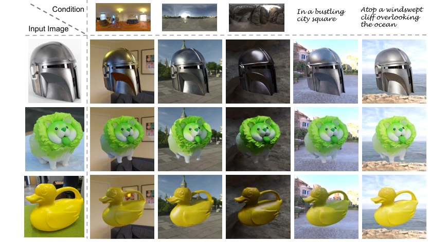
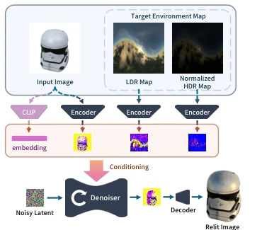
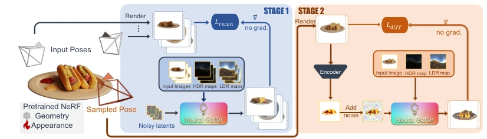
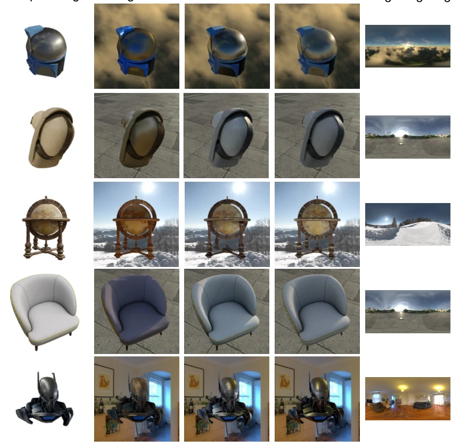
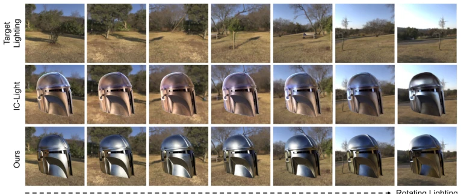
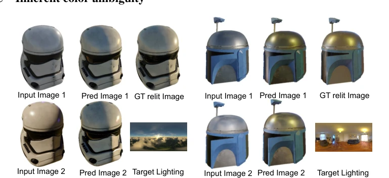
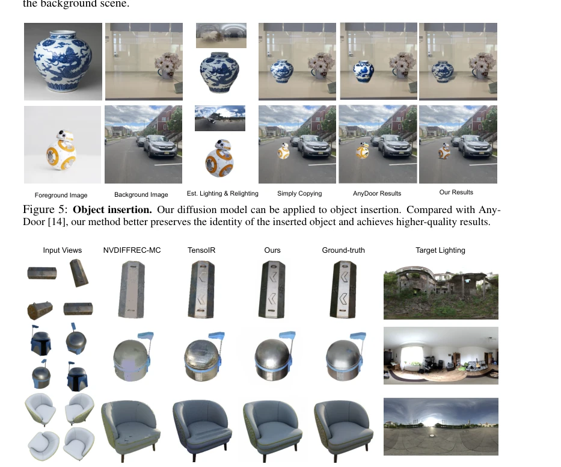
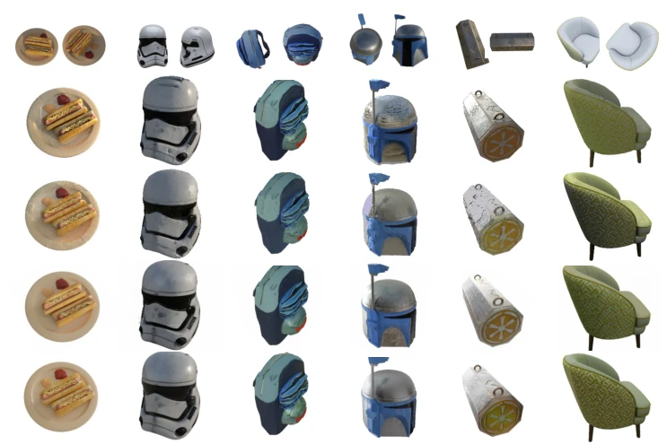

Neural Gaffer attempts to solve the "holy grail" problem of single-image relighting using diffusion models, which sounds appealing, as it avoids explicit decomposition of geometry and materials, generating directly end-to-end. It indeed leverages physical priors embedded within pre-trained diffusion models, offering significantly better generalization than DiLightNet and capable of handling objects of arbitrary categories. However, do not get too excited; the 256x256 resolution is almost an ironic take on "high definition," as objects with rich details become blurry upon relighting, with VAE compression becoming the bottleneck. Furthermore, it relies primarily on Objaverse synthetic data for training, and whether it can withstand complex materials and lighting interactions in the real world remains questionable. For 3D tasks, it serves merely as a "prior" auxiliary, where the core still depends on optimization. Overall, it is a decent CV tool, but it still falls short of a true physical engine, especially regarding high-resolution details; do not expect it to perfectly restore every highlight, as generative models always carry hallucination risks.
Single-image relighting is essentially an ill-posed problem, because lighting, geometry, and materials have infinite interpretations within a single image. Traditional model-based inverse rendering methods [2; 75] often require multi-view inputs and struggle to estimate complex materials in real scenes, easily affected by model constraints. Image-based methods, while avoiding reconstruction, many [18; 58] require special shooting conditions such as light fields or flash. Deep learning single-view methods [67; 51] are mostly limited to specific categories such as portraits, lacking generalization, unable to handle arbitrary objects. Methods explicitly decomposing the scene into normals and BRDF [87; 30], while controllable, have limited representation capabilities, easily losing high-frequency details, leading to unrealistic highlights. Neural Gaffer aims to break these limitations, without explicit decomposition, directly utilizing the data-driven priors of diffusion models to achieve single-image relighting for objects of arbitrary categories, and extends to 3D radiance fields, addressing the shortcomings of existing methods in generalization and realism.

Figure 1: Single-image relighting results on real data. Neural Gaffer supports single-image relighting for various input images under diverse lighting conditions, using either image-conditioned input (i.e., an environment map) or text-conditioned input (i.e., a description of the target lighting). These results demonstrate our model’s capability to adapt to diverse lighting scenarios while preserving the visual fidelity of the original objects. Our relighting results remain consistent with the lighting rotating. Please see the supplementary webpage for additional video results produced from real input images.
The overall process is divided into two stages: 2D relighting model training and 3D radiance field relighting. The 2D model is based on Zero-1-to-3 fine-tuning, with input as a single object image and target lighting (HDR environment map). The innovation lies in the encoding method of lighting conditions: first, rotate the HDR environment map to align with the camera coordinate system, solving the alignment problem between 3D direction and image space. Then split into LDR images (preserving low-intensity details) and normalized HDR images (preserving energy spectrum), concatenated and used as conditional input to the diffusion model. This solves the problem of training instability and detail loss caused by excessively large HDR values. 3D relighting adopts a two-stage pipeline: Stage 1 freezes the NeRF density field, optimizes the appearance field to fit the multi-view relighting predictions generated by the 2D model, obtaining a rough result; Stage 2 utilizes Diffusion Guidance Loss and exponential annealing strategy to further refine appearance, avoiding oversaturation and noise caused by directly using SDS. The training objective is to minimize the MSE of denoised noise, while combining perceptual loss LPIPS to ensure visual quality. Specific training uses 8 A6000 graphics cards, iterates 80,000 times, input image resolution 256x256.

Figure 2: Model architecture. Neural Gaffer is an img2img latent diffusion model conditioned on the input image and rotated lighting maps.

Figure 3: Relighting a 3D neural radiance field. Given an input NeRF and a target environmental lighting, in Stage 1, we use Neural Gaffer to predict relit images at each predefined camera viewpoint. We then tune the appearance field to overfit the multi-view relighting predictions with a reconstruction loss. In Stage 2, we further refine the appearance of the coarsely relit radiance field via the diffusion guidance loss. Using this pipeline, we can relight a NeRF model in minutes.
The dataset constructed RelitObjaverse, containing 18.4 million synthetic images, covering 90,000 high-quality 3D models and 30,000 environment lights. Baseline comparisons include DiLightNet [79] (2D) and TensoIR [30], NVDIFFREC-MC [25] (3D). Metrics used are PSNR, SSIM, LPIPS. 2D results are superior to DiLightNet on both synthetic and real data, PSNR improves by about 2dB, especially more accurate on high-frequency reflections and shadows. 3D relighting performs better on NeRF, baseline methods often suffer from highlight loss or baking original highlights. Ablation studies prove that LDR and HDR dual-channel input and environment map rotation strategy are crucial, lacking either will lead to loss of highlight or reflection details. 3D two-stage compared to direct SDS optimization shows significant effect, Stage 2 effectively reduces noise, making results clearer. Real data testing shows the model can adapt to rotated lighting, maintaining visual consistency.

Figure 4: Single-image relighting comparison with DiLightNet [79] under diverse lighting. Our method demonstrates superior fidelity to the target lighting, maintains more consistent color and detail, and can generate more accurate highlights, shadows, and high-frequent reflections.

Figure 10: Comparison of single-image relighting with IC-Light [85]. In this experiment, we compare relighting results and evaluate the consistency of specular highlights against IC-Light [85]. Each column represents a uniformly rotated version of the same environment map image, progressing from left to right. Our method consistently adjusts highlights, faithfully reproducing the object under novel lighting conditions. In contrast, IC-Light [85] exhibits inconsistent highlight movement, with certain regions changing just slightly. Further comparisons are available in videos provided on the supplemental webpage.

Figure 12: Color ambiguity analysis. We found that our data-driven model can handle the inherent color ambiguity to some extent, especially when the objects’ materials in the input image are relatively specular. Because the diffusion model can infer the lighting of the input image through the reflections or specular highlights
其他图片Other Figures

Figure 6: Relighting 3D objects. We take multi-view images and a target lighting condition as input and compare our method’s relighting results to NVDIFFREC-MC [25] and TensoIR [30]. (The shown images are channel-aligned results.) Lacking strong priors, the baselines tend to miss specular highlights (NVDIFFREC- MC), bake the original highlights (TensoIR), or produce artifacts (NVDIFFREC-MC and TensoIR). In contrast, our method implicitly learns to model the complex interplay of light and materials from the training process of our relighting diffusion model, resulting in more accurate relighting results with fewer artifacts. Video comparisons are available on our project webpage.

Figure 13: More results of relighting 3D objects. We present additional 3D relighting comparison results, which include all of our testing objects. The results show that our methods achieve better qualitative relighting outcomes for all the tested objects